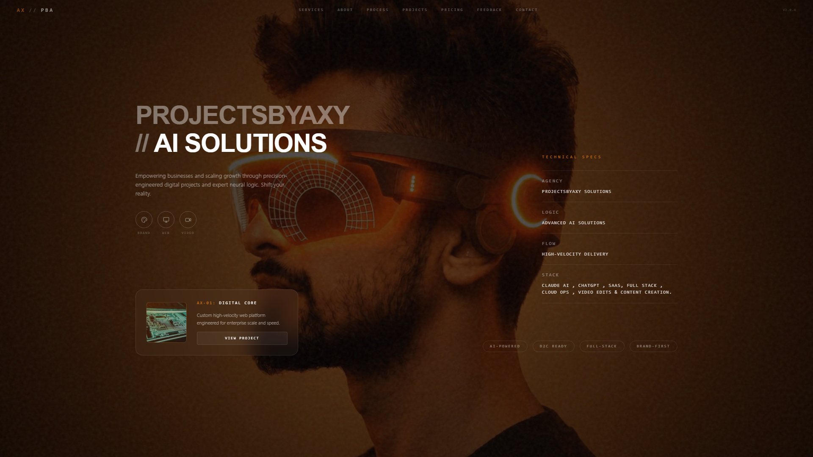

AX
//
PBA
We Don't Build
Websites.
ProjectsByAxy
// AI Solutions
We Engineer
Digital Ecosystems.
6
Services
Brand Identity
Web Development
D2C Store Development
AI Content Creation
Video & Reels
Growth Marketing
Execution Protocol //
01
Discovery & Neural Mapping
02
System Design & Blueprint
03
High-Velocity Build
04
Optimization & Handoff

Real Site. Live Right Now.
ProjectsByAxy
Shift Your Reality.